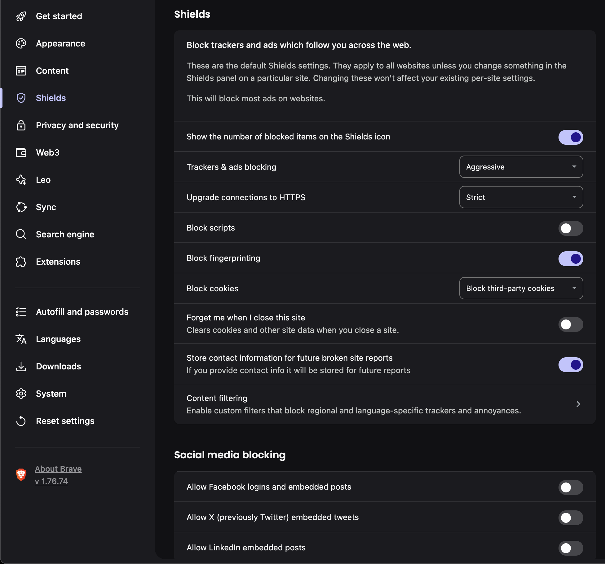
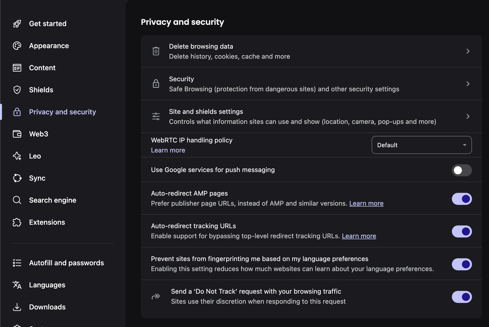
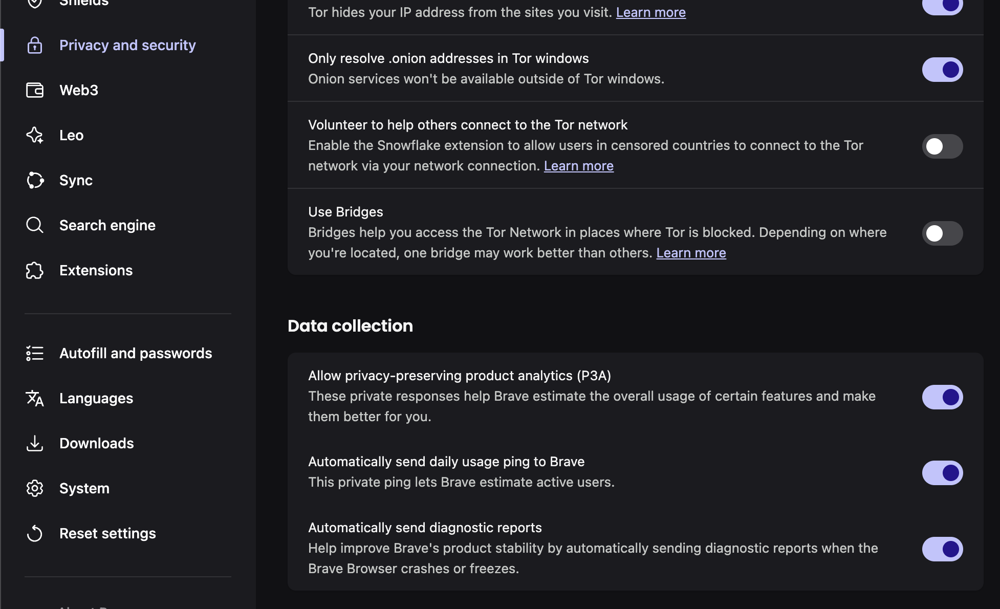
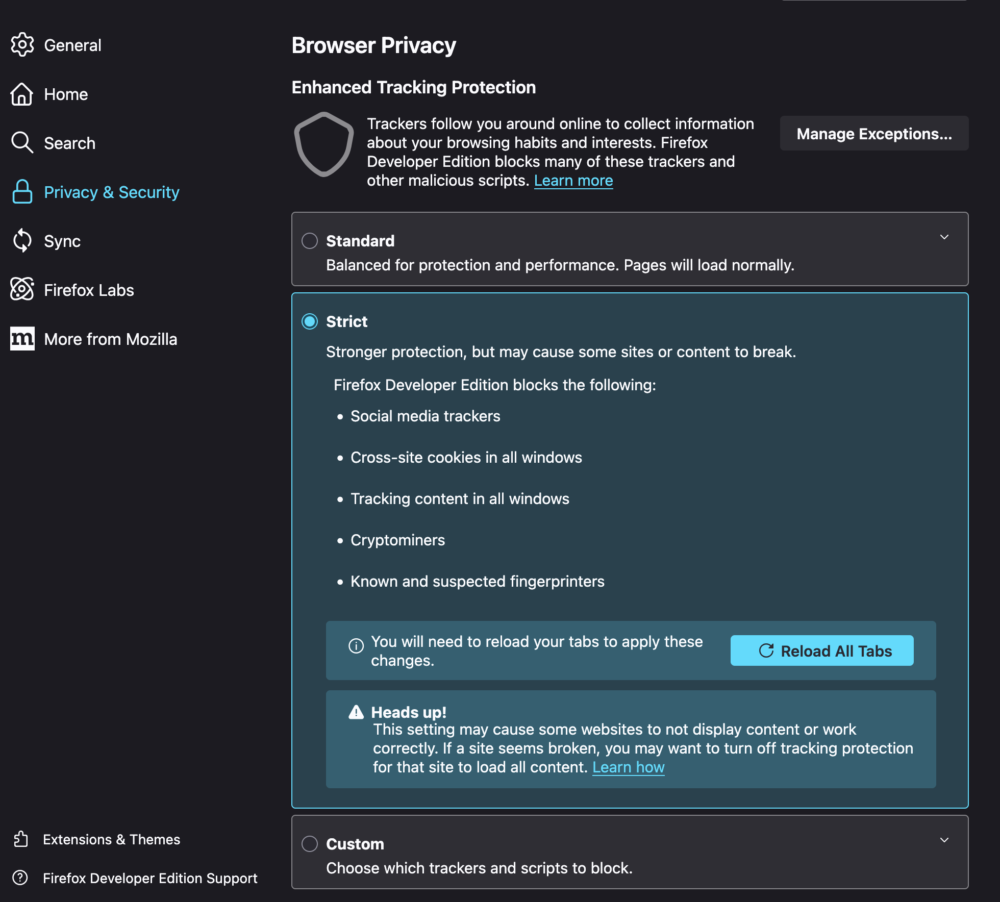
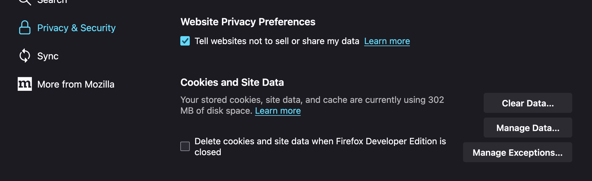
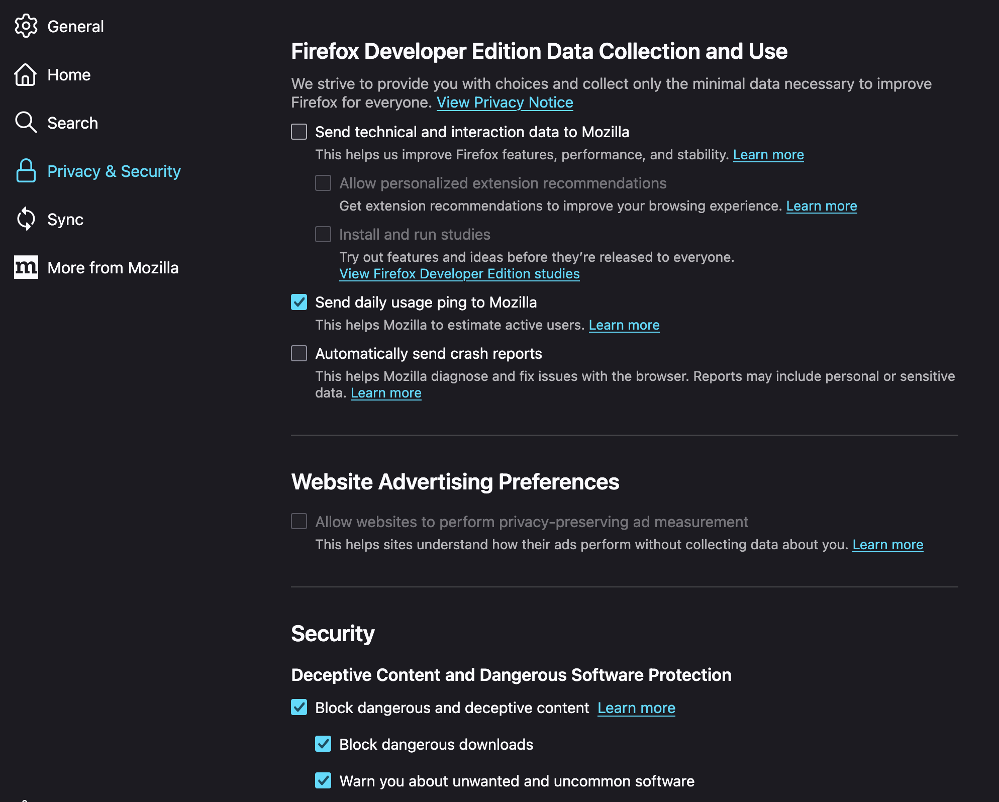

Browser settings
Een goede 'quick-win' is het aanpassen van je browser settings. Je browser is het portaal naar het internet en dus ook naar bijna alle trackers die er zijn. Dus laten we die poort zo veilig mogelijk maken.
Alle browsers hebben in de 'instellingen' wel een 'Privacy & Security' tab. Daar vind je alle mogelijkheden om je browser te beveiligen. Als je een firefox-based browser gebruikt moet je zelf even wat instellingen zetten, als je Brave gebruikt, heb je hele goede defaults en kan je ze stricter maken als je dat wilt.
Van de volgende defaults zal je in je dagelijks gebruik niet zo veel voelen/merken. Deze settings zitten je gebruik niet echt in de weg, behalve dat je heel soms websites niet binnenkomt omdat ze geen encryption gebruiken op hun verbinding. Als je dat vervelend vind, dan kan je de setting 'https-only' uitzetten. Maar dat raad ik je af. Goeie defaults zien er ongeveer zo uit:
Brave
  Firefox/Zen
  Wil je verder?
Als je een stapje verder wilt gaan, dan kan je ook nog de settings aanzetten dat je cookies na iedere sessie verwijderd worden. Dit zorgt ervoor dat ongewilde cookies vrij kort in je browser leven en je dus niet dagen achtereen kunnen tracken. Het nadeel is alleen dat dit wel betekent dat je iedere keer op alle websites opnieuw moet inloggen.
Een manier om die last te verlichten, is om een goeie password manager te gebruiken die een browser plugin heeft waarmee hij alle inlog formulieren kan pre-fillen.
Eigenlijk kom je dan al heel dicht in de buurt van 'incognito-mode' of 'private window' browsing. Het grote verschil is dat in incognito ook nog eens je geschiedenis gewist wordt na iedere sessie.